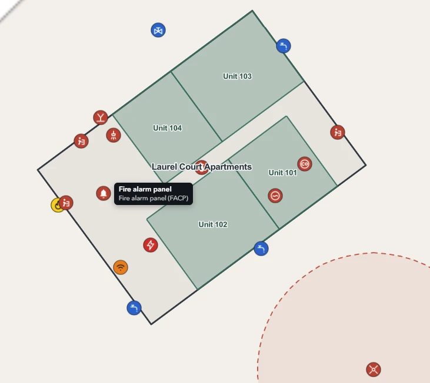
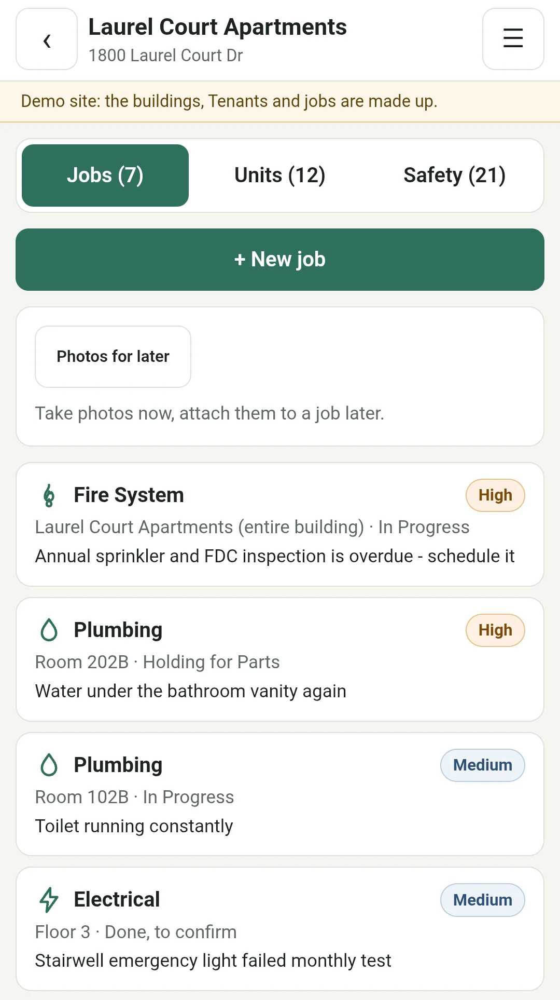
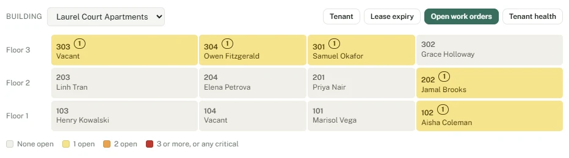
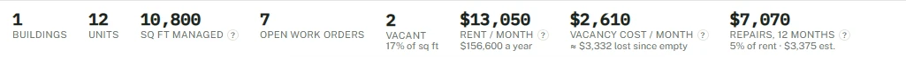

Property portal · in development
Every building's map and memory, in one place.
Where's the water shut-off? Who services the fire panel? Is that after-hours number still good? The answers usually live in one person's head or on a marked-up site plan. Our portal puts them on a map of every building you manage, from a rental house to an office tower, alongside tenants, vendors and work orders, and tells you what's missing before someone needs it.
Portal demo
A small sample of what it does.
Four screens from the demo portal, on a computer and on a phone. Laurel Court is a made-up twelve-unit apartment building.




Click or tap any screen to see it full size.
How it works
At the desk, and on site.
The portal runs in a web browser, with nothing to install. Most of the work happens on a computer. The people out at your properties use a phone page made for a small screen and one free hand.
ON A COMPUTER
Your whole portfolio
The full portal: every building you manage on a map, floor by floor, with the reports and the money. Everything in the next section lives here.
For you and your office staff.
ON A PHONE
At the property
A building's open jobs, notes and photos taken on the spot, one tap to call a tenant, and room-by-room move-in, move-out and routine inspections with a report ready to print.
For you and your maintenance staff. Staff see their own jobs, never the money.
FOR VENDORS
Just their job
Send a vendor a link to one job. No account and no password: they see what's wrong and where, add notes and photos, and mark it done.
They never see your other jobs or the rest of the portal.
What it keeps track of
The building, and everything a manager needs to know about it.
Each building is modeled floor by floor: suites, rooms, the core, and the things a responder or a new manager needs to find first.
Building map
Floors, suites and rooms on a real plan, with a stacking view of who is where and what is vacant.
Tenants and contacts
Primary, after-hours and billing contacts for every tenant, with the date each one was last confirmed, plus past tenants and rent history.
Vendors and work orders
Who services what, how to reach them, and a simple job log tied to the unit, floor or room it happened in, with each job's estimated and actual cost.
Safety and systems
Shut-offs, fire alarm panel, FDC, generator, roof access and assembly points, with a check for what's missing or out of date.
Money at a glance
Rent, vacancy cost and repair spend for each building, with a rough return and breakeven. Estimates to help you decide, not a replacement for your accounting.
Who does what
Three parts, three different jobs.
YOU BRING
What you already know
Plans in any form, equipment and vendor lists, tenant contacts, and the people who know where things are.
Anything nobody has recorded, your staff confirm on their normal rounds.
WE DO
Put it on the map
Floor plans from CAD, PDF or paper, with your equipment, shut-offs and contacts placed where they belong.
A one-time setup per building, quoted up front.
THE PORTAL
Keeps it from going stale
Who to call, where things are, what's overdue. Your team confirms as they go, and it flags what they haven't.
A monthly subscription per building.
Questions
Questions you might have.
What happens when a building changes hands?
Ownership and management turn over every few years, and knowing where the water shut-off is tends to be the first thing lost. In the portal it stays with the building, ready to hand to the next manager.
Do my staff need GIS skills?
No. Staff add a shut-off or a fire panel by picking what it is and clicking the map. Floors, rooms and coordinates are handled for them.
Can sensitive locations stay private?
Yes. Cameras, lockboxes and network rooms can be marked manager-only, and they're left off tenant plans and anything shared.
Does it replace my accounting or work order system?
No. Accounting and work order systems stay where they are. The portal holds what those systems don't: the building itself. Its money figures are estimates to help you decide, not books.
What is it built on, and is my data secure?
It's built on Esri's ArcGIS, the mapping platform cities, counties, universities and utilities use for their own facilities, with a secure portal in front of it. Each login only ever sees its own buildings, and that's enforced on the server, not just hidden on the screen.
A detailed security overview is available on request.
Can I get my data out?
Yes. Building data is kept in an industry-standard format (an Esri geodatabase). It can be exported and handed over at any time, for example when a building is sold.
Recently added
What's new in the portal.
Updated October 2026
- Oct 2026See what each building earns. Rent, vacancy cost and repairs, with a rough return and breakeven for every building.
- Oct 2026Past tenants and rent history, kept automatically when tenants or rents change.
- Oct 2026Rental houses, fully supported, including both halves of the A/C and contacts that fit a household.
- Sep 2026Work orders with a running log, and vendors suggested by trade for each job.
In development
See it on a demo building.
The portal is in active development and improves every week. Ask for a demo and we'll walk you through the real portal on a fully mapped sample portfolio: an office tower, apartments, a retail strip and rental homes, with their floors, tenants, vendors, work orders and safety features.
Request a demo